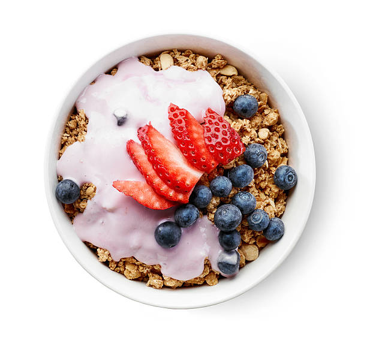
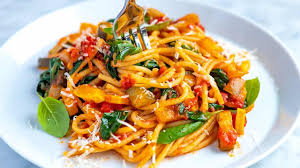

Featured Recipes

Quick Breakfast Bowl
A healthy and filling breakfast made with oats, fresh fruits, and a drizzle of honey. Ready in just 10 minutes!
View Recipe

Easy Veggie Pasta
This quick pasta dish with seasonal vegetables and a light tomato sauce is a family favorite. Ready in 20 minutes!
View Recipe
Vegetarian Stir Fry
A colorful and healthy stir fry packed with fresh vegetables and tofu, seasoned with soy sauce and garlic.
View Recipe